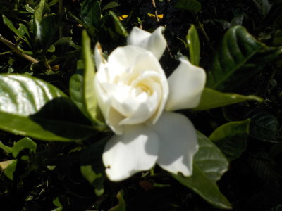
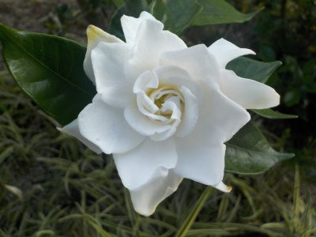
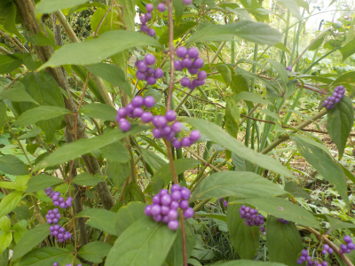

遊びで植物を育てよう
2020/10/18
今日も秋のクチナシが綺麗に咲いていました。

ちょっとずつ次々咲いています。
毎年四季咲きっぽく咲くといいです。
【10月TOP】 【日記TOP】 【園芸TOP】
2020/10/04
10月ですけどクチナシの花が綺麗に咲いていました。

狂い咲きかな。
顔を近づけると甘いいい香りがしました。
クチナシが四季咲きでちょっとずつ長い期間咲いたらいいのにって思いました。
一度に咲くと部分的に茶色く枯れていくのが実だってあんまり好きじゃないです。
【10月TOP】 【日記TOP】 【園芸TOP】
2020/10/04
ムラサキシキブって今だけとっても目立ちますね。

紫の色が濃くなるととっても存在感が出てきました。
キレイだ。
毎年見たいですね。
【10月TOP】 【日記TOP】 【園芸TOP】
過去の日記
【2019年10月の日記】
【2018年10月の日記】
【2017年10月の日記】
【2016年10月の日記】
【2015年10月の日記】
【2014年10月の日記】
【2013年10月の日記】
【2012年10月の日記】
【10月TOP】
【日記TOP】
【園芸TOP】
畑仕事じゃないよ。
【おいしいものを食べよう。】【たくさん寝よう。】
【ソロ活をしよう!】【季節感のあることをしよう。】【動画視聴はほどほどに。】【当サイトの全てのコンテンツは無断転載禁止です。】